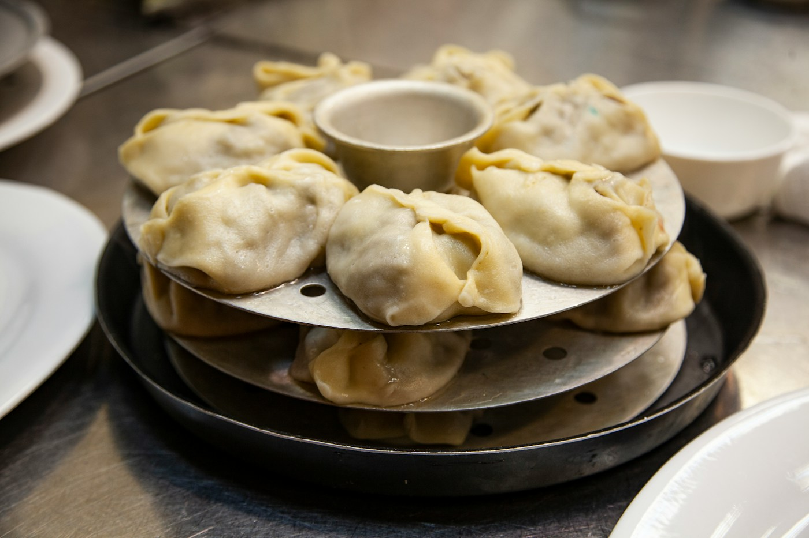
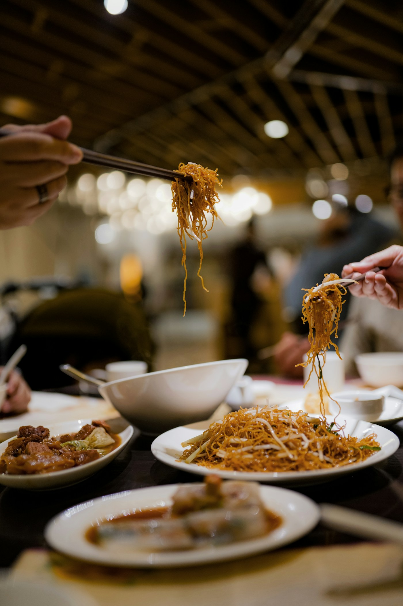
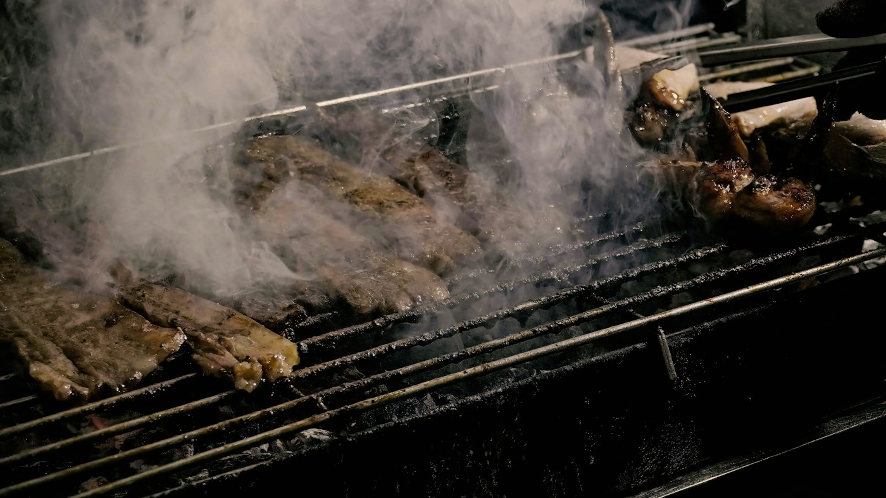

Raamstraat 7A, Den Haag
ArmanUyghur Restaurant
De Oeigoerse keuken in het centrum van Den Haag: handgetrokken noedels, polo met mals lamsvlees en manta uit de stoommand.
4,8 uit 20 beoordelingen van gasten
Oeigoerse eetcultuur, met de gezelligheid van een buurtzaak
Aan de knusse Raamstraat in Den Haag vind je een plek waar gastvrijheid en smaak hand in hand gaan. In deze sfeervolle zaak komt de rijke Oeigoerse eetcultuur tot leven, gecombineerd met de vertrouwde gezelligheid van een buurtzaak.
Hier wordt met aandacht gewerkt aan ieder gerecht, of je nu langskomt voor een snelle hap of zin hebt in iets bijzonders. Authentieke smaken, verse ingrediënten en een warme, persoonlijke benadering vormen de basis van alles wat hier wordt gedaan.
Real food, real enjoyment. 100% authentic.
-

Manta
Gestoomde dumplings met rundvlees, pompoen, komijn en knoflook.
-

Royal Laghman
Handgetrokken noedels, gewokt met rundvlees en verse groenten.
-

Kawap
Lamsspiesjes van de grill, met komijn, knoflook en chili.

Bestellen, afhalen en catering
Via de website bestel je eenvoudig en snel je favoriete gerechten online. Met een paar klikken stel je je bestelling samen en kies je precies waar je zin in hebt.
Kies een afhaalmoment dat jou goed uitkomt, en je maaltijd staat op het afgesproken tijdstip warm en vers voor je klaar. Afhalen kan elke dag van 12:00 tot 21:30.
Online bestellenCatering
Voor feestjes, zakelijke bijeenkomsten of andere gelegenheden biedt Arman ook diverse cateringmogelijkheden. Vraag gerust wat er kan via +31 6 29156376 of armanuyghurservice@gmail.com.
4,8 uit 20 beoordelingen
“Aardige mensen, heerlijk en authentiek eten, grote porties, betaalbaar en leuke inrichting.”
“Service was top, de medewerkers waren heel beleefd en het eten was ook heerlijk!”
“Lekker eten, aardig personeel.”
Een tafel reserveren
Kies een datum en tijd, dan staat je tafel klaar. Liever even bellen? Dat kan ook.
+31 6 29156376Openingstijden
| Maandag | 12:00 – 21:30 |
|---|---|
| Dinsdag | 12:00 – 21:30 |
| Woensdag | 12:00 – 21:30 |
| Donderdag | 12:00 – 21:30 |
| Vrijdag | 13:00 – 22:00 |
| Zaterdag | 12:00 – 22:00 |
| Zondag | 12:00 – 21:30 |
Afhalen: elke dag van 12:00 tot 21:30.
Contact
Arman Uyghur RestaurantRaamstraat 7A
2512 BX Den Haag